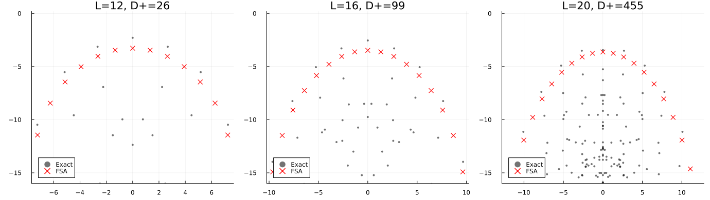
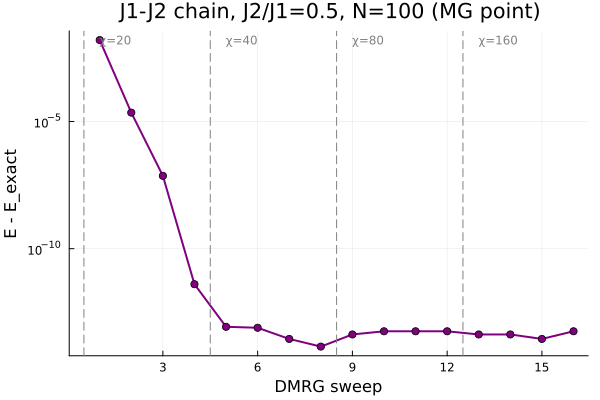
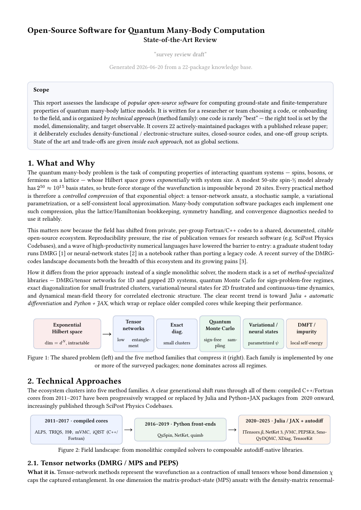

A problem-solving harness for quantum many-body lattice problems — ground-state and
finite-temperature — plus the scientific-research skills around it. You drive it in plain language;
it routes to the right method, runs the calculation, verifies the result, and hands you a script,
plot, or document you can rerun. Below are the three journeys the harness is built around, each shown
as a real, captured run — the transcripts, plots, and reports are actual output, not mockups.
Workflow 1 — Reproduce, then challenge
Harnessing Quantum 2026
The summer-school journey. You arrive on a method track, reproduce its reference
result to calibrate yourself and the tooling, then invent a feasible challenge that goes
beyond the paper and ship it. The harness guides each phase and teaches as it goes — it never
auto-solves the challenge for you.
/onboardset up the stack
→
/track-starterpick a track
→
/reproduce-paperreproduce the reference
→
/challengego beyond it
→
/challenge-reportclean PR + report
Harnessing Quantum — Exact Diagonalization track
> /track-starter# the harness lists the available tracks and their reference papersTrack Title Reference target
ed Exact Diagonalization Turner et al., "Quantum many-body
scars," Nat. Phys. 14, 745 (2018)> the ED track, reproduce Fig. 3Before any compute — confirming the setup: Model PXP / "Fibonacci" chain (Rydberg blockade)
Hamiltonian H = Σ Pᵢ₋₁ Xᵢ Pᵢ₊₁
Boundary periodic; sector k=0, inversion-even
Observable E vs log₂|⟨Z₂|ψ⟩|² (the scar band)
Sizes L = 12, 16, 20 (beginner tier; paper uses L=32)Look right?> yes, run it# /reproduce-paper builds the constrained sector, dense-diagonalizes,
# and checks every eigenpair residualRunning L=12: constrained basis → k=0, I=+ sector → dense ED
L=12 done: full D=322, sector D=26, max residual 2.2e-14
L=16 done: full D=2207, sector D=99, max residual 2.5e-14
L=20 done: full D=15127, sector D=455, max residual 4.4e-14
Figure: figs/fig3a.png
Completed in 3.29 seconds.Reproduced. The Z₂ scar band (red, FSA tower) sits cleanly
above the thermal bulk — the paper's signature. self-checked:
residuals ~1e-14, correct sector dimensions.> /challenge — what could I try beyond this?Ranked, time-boxed candidates (you choose, then take it to
the help desk for go/no-go): 1. Push L=24→28 on the cluster; track how the scar
overlap scales with system size. (~hours, cluster)
2. Add a chemical-potential detuning term and watch the
scar band detach / reconnect. (~half day, local)
3. Compare exact scars vs the FSA tower error vs L.
(~hours, local)… you pick one, the mentor gives graded hints, then
/challenge-report gates a clean PR under tracks/ed/.

Captured result. Eigenstate energy vs overlap with |Z₂⟩ for the PXP chain.
Gray = all eigenstates (thermal bulk); red ✕ = the forward-scattering-approximation (FSA) tower —
the special scar states with anomalously large |Z₂⟩ overlap. The scar band sharpens as L grows
(L=12 → 16 → 20). This is the Turner et al. (2018) Fig. 3 signature, reproduced in 3.3 s locally.
Takeaway. Reproduction is your calibration target: it confirms the setup, the tool, and your
understanding before you spend effort going beyond. Here a faithful scar band landed in
3.3 s with residuals of ~1e-14 — solid ground to
launch a challenge from.
Workflow 2 — Bring your own problem
Computational methods
The everyday path. State a concrete model in plain language; the harness infers the
defaults, recommends a method, runs it, and verifies against a known limit. When the system gets too
big for your laptop, the same run ships to the cluster unchanged. Heavy compute is a branch inside this
workflow, not a separate one.
/solvestate the problem
→
/method-mpspick the method
→
/using-itensorspick the tool
→
/using-slurmscale up (when heavy)
→
/reportHTML writeup
J₁–J₂ Heisenberg chain — ground state
> ground state of the J1-J2 Heisenberg chain at J2/J1 = 0.5Confirming before compute: H = J₁ Σ Sᵢ·Sᵢ₊₁ + J₂ Σ Sᵢ·Sᵢ₊₂, S=½
J₁=1, J₂=0.5 → the Majumdar–Ghosh point
N=100, open boundary, Sz=0 sector
Method: DMRG (matrix-product states) via ITensorsJ₂/J₁=0.5 is exactly solvable — the ground state is the dimer
product state with E₀/N = −3/8. That's a built-in check.> go# /method-mps → /using-itensors generates and runs the script,
# ramping the bond dimension χ and printing every sweep sweep 1 χ= 20 E/N = −0.37484171 err = 1.6e-04
sweep 2 χ= 20 E/N = −0.37499978 err = 2.2e-07
sweep 3 χ= 20 E/N = −0.37500000 err = 7.3e-10
sweep 4 χ= 20 E/N = −0.37500000 err = 4.0e-14
sweep 8 χ= 40 E/N = −0.37500000 err = 1.7e-16
sweep 16 χ=160 E/N = −0.37500000 err = 5.6e-16
Final: E₀/N = −0.37500000 |error| = 5.55e-16 (26.6 s)E₀/N = −0.375000, converged. Verified against the
Majumdar–Ghosh exact value to machine precision (5.6e-16).
Script: scripts/j1j2_heisenberg_dmrg.jl> now I want N=400 and a J2 scan — too slow hereAbove the laptop budget → ship to the cluster: /using-slurm stage script + sbatch to the active profile
/parameter-scan sweep J₂/J₁ ∈ [0, 1] as an array job
one manifest per cell fetched back; nothing re-typed by hand… then /report renders the run into a self-contained HTML page.

Captured result. DMRG energy error E − E_exact
vs sweep (log scale). At bond dimension χ=20 the error already drops below 1e-13 in four sweeps;
raising χ to 40/80/160 (dashed lines) holds it at the machine-precision floor. The flat floor
is the convergence proof — the calculation has nothing left to gain. Final
E₀/N = −0.375000, matching the Majumdar–Ghosh exact value.
Takeaway. You never picked a bond dimension, a sector, or a sweep schedule — you stated the
physics and the harness chose them, then proved the answer against a known limit
(|error| = 5.6e-16). The cluster is the same workflow with a bigger N, not a
detour.
Workflow 3 — Scientific research skills
sci-brain
The harness doesn't stop at numbers. The bundled sci-brain skills cover the
research work around a calculation: mapping a field and writing it up, and brainstorming new
directions with AI agents. Two flows below — a survey you can hand to a team, and an ideas report you
can take to a help desk or advisor.
a.
Survey writing
Map a research area from scratch: parallel search strategies build a literature
knowledge base with BibTeX, the references are fetched and rendered to full text, then a structured
state-of-the-art review is drafted section by section.
/surveyexplore + build KB
→
/download-reffetch + render PDFs
→
/survey-writerdraft the review
Survey — open-source many-body software
> /survey — open-source software for quantum many-body computationWhich search strategies should I run in parallel? ✓ Landscape mapping broad field overview
✓ Cross-method DMRG vs QMC vs VMC vs DMFT stacks
✓ Benchmarks/datasets shared model/result infrastructure# one search worker per strategy, in parallel → findings reportsConsolidated 3 reports, deduplicated by DOI/arXiv:
• Tensor networks: ITensor, TeNPy, MPSKit, PEPSKit …
• ED: QuSpin, XDiag, ALPS …
• QMC / VMC / DMFT: ALF, mVMC, NetKet, TRIQS, w2dynamics …Which directions go into the knowledge base?> all of them# BibTeX verified against authoritative sources — never from memoryKnowledge base: 53 references, 24 papers rendered to full text
→ .knowledge/literature/software/ ref.bib> /survey-writer — write it up, organized by method# drafts section by section, you approve each before the next§ What and Why
§ Technical approaches (tensor networks · ED · QMC · VMC/NQS · DMFT)
§ At-a-glance comparison
§ Open problems
Saved: articles/2026-06-20-many-body-software-review.pdf (5 pages)State-of-the-art review drafted from 53 grounded references,
organized by technical approach with per-method trade-offs.

Captured result. Page 1 of the generated review,
articles/2026-06-20-many-body-software-review.pdf — a real 5-page state-of-the-art
report built from a 53-reference knowledge base (24 papers rendered to
full text). Organized by technical approach (tensor networks, ED, QMC, VMC/NQS, DMFT), each with
its own state of the art and trade-offs.
Takeaway. From a one-line topic to a cited, team-ready review — the search, the BibTeX, and
the full-text rendering are all real artifacts under .knowledge/ and
articles/, not a chat summary.
b.
Brainstorming ideas with AI agents
A research collaborator that thinks with you. A warm mentor drives the
conversation while a separate critic agent stress-tests every idea — the deal is "you think, I fetch":
the agents surface facts, references, and cross-field connections; you do the deep reasoning. The
converged direction becomes a structured ideas report.
Ideator (mentor)Proposes directions, surfaces a related fact from a neighboring field, encourages deeper thinking.
Polya (critic)Asks "what is the plan? can you solve a part of it?" — pins down the minimum viable experiment and the failure signals.
/brainstorm-ideastwo-agent dialogue
→
/idea-writerstructured proposal
Brainstorm — neural states vs DMRG on frustrated magnets
> /brainstorm-ideas — can neural quantum states beat DMRG
on the 2D J1-J2 model near maximal frustration?Ideator Ambitious — I like it. The good news: this is
exactly where DMRG struggles (2D area law fights you). Oh — this
reminds me, in the survey we just built, NetKet's recent results
on J1-J2 are the closest prior art. Worth a look.Polya Before we dream: what is the plan, concretely?
And can you solve a *part* of it first — a size where ED still
gives ground truth?> start at a 6×6 lattice where I can cross-check against EDIdeator Good instinct. I can't reason through the
expressivity question myself — use your evolving brain here: is a
shallow CNN ansatz enough near J2/J1≈0.5? Tell me what you'd need
to know and I'll fetch it.Polya Define the kill-criterion now, while it's cheap.> ok. /idea-writer — turn this into a proposal# writes Research Question · Novelty · MVP · success/hope/pivot
# signals → articles/…-ideas-report.mdSaved: articles/2026-06-20-nqs-frustration-ideas-report.md
Neural quantum states near maximal frustration
ideas report · generated by /idea-writer
Research question
Can a CNN-based neural quantum state reach DMRG-competitive energies for the 2D J₁–J₂ model at J₂/J₁ ≈ 0.5?
Novelty
Targets the exact regime where 2D DMRG area-law cost explodes.
Why now / why you
NetKet + JAX make the ansatz a few lines; you have the ED cross-check.
Cross-field link
Expressivity bounds borrowed from ML approximation theory.
Min. viable exp.
6×6 lattice vs ED ground truth before scaling up.
Success signal
Energy within ED error bars at 6×6, then beats DMRG χ-limit at 10×10.
Hope signal
Not yet at ED accuracy, but error falls steadily with width.
Pivot signal
Variance plateaus far above ED — change ansatz or abandon.
Representative artifact. The structure is exactly what /idea-writer
emits — research question, novelty, minimum viable experiment, and explicit success / hope / pivot
signals. (The survey above is a captured run; this brainstorming exchange is illustrative — the
dialogue is interactive by nature.)
Takeaway. Two agents with distinct jobs — a mentor that opens directions and a critic that
forces a minimum viable experiment and a kill-criterion — leave you with a proposal that already
knows how it could fail. You stay the thinker; the agents fetch and challenge.